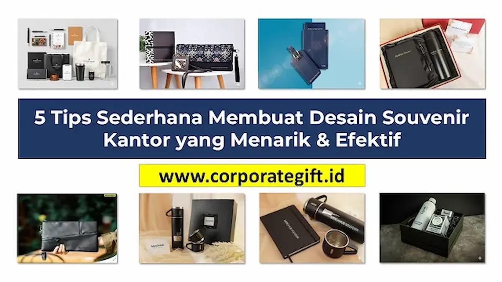

Corporate Gifts ID - Desain souvenir kantor yang menarik dibuat dengan menerapkan lima prinsip utama: gunakan konsep minimalis, sesuaikan desain dengan jenis produk dan material, manfaatkan psikologi warna sesuai brand, pilih tipografi yang mudah dibaca, dan siapkan file dalam format vektor. Kelima tips ini memastikan souvenir tidak hanya terlihat estetik, tetapi juga efektif memperkuat citra positif perusahaan Anda.
Poin Kunci Merancang Desain Souvenir Kantor:
- Pendekatan Minimalis: Hindari menjejalkan seluruh informasi kontak pada barang kecil. Logo bersih yang proporsional memancarkan kesan jauh lebih prestisius.
- Kesesuaian Media & Teknik: Sesuaikan karakteristik desain dengan media fisik, baik itu sablon kain, grafir laser logam, maupun deboss kulit.
- Konsistensi Palet Warna: Gunakan kode warna standar perusahaan (Pantone/CMYK) agar identitas korporat tetap terjaga di berbagai produk.
- Tipografi Berdaya Baca Tinggi: Pilih jenis font sederhana dan tegas yang tetap terbaca jelas dari jarak pandang satu lengan.
- Wajib Format Vektor: Selalu siapkan master logo dalam format kurva vektor (.AI, .EPS, .CDR) agar hasil cetak tidak pecah atau buram.
Anda mungkin sudah memilih produk souvenir kantor yang tepat dan mengalokasikan anggaran khusus. Namun, ada satu elemen krusial yang menentukan apakah barang tersebut akan disimpan dengan bangga atau justru dilupakan: kualitas desain visualnya.
Desain yang keliru, seperti logo beresolusi rendah yang pecah, tipografi rumit yang sukar dieja, atau penempatan warna yang bertabrakan, dapat seketika membuat barang cenderamata bernilai mahal terlihat murahan. Sebaliknya, perancangan yang cermat sanggup menyulap item fungsional sederhana menjadi duta brand yang memancarkan kelas tersendiri.
Mengapa Desain Adalah Kunci Efektivitas Souvenir?
Dalam dunia corporate gifting modern, desain memiliki fungsi strategis yang jauh melampaui urusan dekorasi estetika semata:
- Menciptakan Kesan Pertama yang Kuat: Desain visual adalah hal pertama yang ditangkap oleh mata penerima. Tampilan yang bersih dan tertata rapi seketika membangun impresi bahwa instansi Anda dikelola secara profesional.
- Meningkatkan Retensi Pemakaian: Souvenir dengan sentuhan grafis elegan lebih berpeluang besar dipakai dalam aktivitas kantor harian atau dibawa ke ruang publik, sehingga eksposur merek berlangsung secara berkelanjutan.
- Menyampaikan Nilai Korporat: Melalui pemilihan elemen grafis, perusahaan dapat mengomunikasikan karakter intinya, apakah inovatif, berwibawa, ramah lingkungan, atau progresif.
5 Tips Praktis untuk Desain Souvenir yang Berkesan
Anda tidak perlu berlatar belakang desainer grafis andal untuk memahami kaidah dasarnya. Terapkan lima panduan praktis berikut:
1. "Less is More": Terapkan Desain Minimalis & Elegan
Hindari godaan untuk memasukkan seluruh informasi kantor ke dalam satu bidang cenderamata. Mencantumkan nama perusahaan, alamat gedung, email, nomor fax, media sosial, dan slogan panjang di permukaan sebuah pulpen atau tumbler justru membuatnya tampak penuh sesak dan murahan.
Pilihlah elemen inti yang paling esensial. Sering kali, logo korporat berukuran proporsional yang diletakkan pada posisi strategis sudah lebih dari cukup. Kaidah ini menjadi fondasi mutlak saat merancang cenderamata eksekutif bagi jajaran pimpinan dan mitra VVIP.
2. Sesuaikan Desain dengan Produk & Materialnya
Konsep visual yang tampak memikat di layar monitor belum tentu dapat diaplikasikan secara sempurna pada material produk nyata. Pertimbangkan dua faktor teknis berikut:
- Dimensi Area Cetak: Bidang permukaan pada pulpen metal, flashdisk kartu, dan tas pouch kanvas memiliki luasan yang amat kontras. Sesuaikan detail garis agar tidak saling bertumpuk saat dicetak kecil.
- Karakteristik Bahan: Desain penuh warna gradasi sangat cocok untuk media tote bag kanvas melalui teknik cetak digital. Namun, untuk permukaan stainless steel atau kayu jati, teknik grafir laser monokrom jauh lebih tahan lama dan elegan.
3. Manfaatkan Psikologi Warna Sesuai Brand Anda
Warna memicu respons emosional langsung. Selalu gunakan pedoman warna resmi korporat (brand style guide) guna mempertahankan konsistensi identitas merek. Apabila Anda merancang edisi khusus, padukan warna yang mewakili pesan kampanye tersebut, seperti perpaduan hijau dan cokelat alami untuk produk bertema keberlanjutan (eco-friendly).
4. Pilih Tipografi (Font) yang Mudah Dibaca
Bila desain memuat teks seperti tema seminar, nama divisi, atau kutipan motivasi, pilihlah jenis huruf yang jelas dan tegas. Hindari penggunaan font kaligrafi dekoratif yang terlalu rapat atau tipis. Lakukan uji keterbacaan praktis: pastikan teks tetap dapat dieja tanpa kesulitan dari jarak pandang satu lengan.
5. Siapkan File Desain dalam Format yang Tepat (Vector)
Inilah aspek paling teknis namun paling krusial untuk menjamin kesempurnaan hasil akhir. Selalu sediakan master logo perusahaan dalam format kurva vektor (.AI, .EPS, .CDR, atau .PDF vektor).
Berbeda dengan format bitmap raster seperti .JPG atau .PNG yang rentan pecah menjadi bintik-bintik piksel buram saat diperbesar, file vektor mempertahankan ketajaman garis pada skala ukuran berapa pun. Menyerahkan file vektor kepada pihak vendor memastikan pisau grafir dan pelat sablon bekerja dengan presisi milimeter.

Persiapan master file logo vektor untuk menjamin ketajaman hasil cetak dan grafir souvenir korporat.
Tabel Panduan Format File & Teknik Cetak Souvenir
Berikut matriks kesesuaian antara jenis bahan souvenir, opsi teknik cetak, dan spesifikasi format file yang wajib disiapkan:
| Material Souvenir | Teknik Cetak Rekomendasi | Format File Wajib | Karakteristik Output Hasil |
|---|---|---|---|
| Logam & Stainless Steel (Tumbler, Pen Metal) | Grafir Laser (Fiber Laser) | Vektor .AI / .EPS / .CDR | Monokrom permanen, anti gores, presisi tinggi |
| Kulit Asli / Sintetis (Agenda, Pouch Kulit) | Blind Deboss / Hot Foil Stamping | Vektor Solid 1-Warna | Aksen cekung timbul elegan dengan kilau mewah |
| Kain Kanvas & Blacu (Tote Bag, Pouch) | Sablon Manual / DTF Digital | Vektor atau PNG 300 DPI | Full color, fleksibel, daya rekat kain kuat |
| Kayu & Bambu (Plakat Kayu, Coaster) | Grafir Laser CO2 / UV Flatbed | Vektor .AI / .PDF | Nuansa rustic natural atau cetak warna tajam |
Butuh Bantuan Proses Desain? Kami Siap Membantu
Kami memahami sepenuhnya bahwa tidak semua organisasi memiliki tim desainer grafis internal yang khusus menangani tata letak barang promosi. Oleh sebab itu, di Corporate Gifts ID, peran kami tidak hanya mencetak produk jadi.
Tim spesialis kami siap mendampingi Anda dalam mengecek kualitas file logo, mengonversi gambar bitmap menjadi kurva vektor, serta memvisualisasikan mockup 2D/3D realistis agar Anda memiliki kepastian penuh atas hasil cetak sebelum lini produksi berjalan.
Kesimpulan
Perancangan desain yang matang merupakan investasi terukur yang memberikan timbal balik besar terhadap citra profesional perusahaan Anda. Melalui penerapan prinsip minimalis, pemilihan palet warna yang konsisten, dan penyediaan master file vektor yang tepat, suvenir kantor sederhana dapat bertransformasi menjadi sarana branding yang berwibawa dan bernilai jangka panjang.
Pertanyaan Umum Seputar Proses Desain Souvenir (FAQ)

Ditulis oleh: Sholikhatun Nikmah
Senior Corporate Gifting SpecialistSpesialis kurasi souvenir VIP, gift set eksekutif, hampers korporat, dan cinderamata kemitraan strategis B2B di CorporateGifts.ID.
Lihat Profil Lengkap & Panduan Lainnya